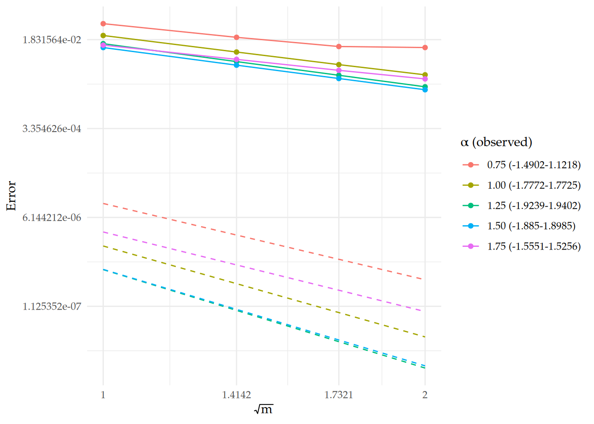

Let us set some global options for all code chunks in this document.
# Set seed for reproducibility
set.seed(1982)
# Set global options for all code chunks
knitr::opts_chunk$set(
# Disable messages printed by R code chunks
message = TRUE,
# Disable warnings printed by R code chunks
warning = TRUE,
# Show R code within code chunks in output
echo = TRUE,
# Include both R code and its results in output
include = TRUE,
# Evaluate R code chunks
eval = TRUE,
# Enable caching of R code chunks for faster rendering
cache = FALSE,
# Align figures in the center of the output
fig.align = "center",
# Enable retina display for high-resolution figures
retina = 2,
# Show errors in the output instead of stopping rendering
error = TRUE,
# Do not collapse code and output into a single block
collapse = FALSE
)
# Start the figure counter
fig_count <- 0
# Define the captioner function
captioner <- function(caption) {
fig_count <<- fig_count + 1
paste0("Figure ", fig_count, ": ", caption)
}
# Define the function to truncate a number to two decimal places
truncate_to_two <- function(x) {
floor(x * 10000) / 10000
}
m1table <- rSPDE:::m1table
m2table <- rSPDE:::m2table
m3table <- rSPDE:::m3table
m4table <- rSPDE:::m4table# install.packages("INLA",repos=c(getOption("repos"),INLA="https://inla.r-inla-download.org/R/testing"), dep=TRUE)
# inla.upgrade(testing = TRUE)
# remotes::install_github("inlabru-org/inlabru", ref = "devel")
# remotes::install_github("davidbolin/rspde", ref = "devel")
# remotes::install_github("davidbolin/metricgraph", ref = "devel")
library(INLA)## Loading required package: Matrix## This is INLA_25.05.01 built 2025-05-01 18:43:33 UTC.
## - See www.r-inla.org/contact-us for how to get help.
## - List available models/likelihoods/etc with inla.list.models()
## - Use inla.doc(<NAME>) to access documentation
## - Consider upgrading R-INLA to testing[25.06.22-1] or stable[25.06.07].## Loading required package: fmesher## This is rSPDE 2.5.1
## - See https://davidbolin.github.io/rSPDE for vignettes and manuals.## This is MetricGraph 1.4.1
## - See https://davidbolin.github.io/MetricGraph for vignettes and manuals.##
## Attaching package: 'MetricGraph'## The following object is masked from 'package:stats':
##
## filter##
## Attaching package: 'plotly'## The following object is masked from 'package:ggplot2':
##
## last_plot## The following object is masked from 'package:stats':
##
## filter## The following object is masked from 'package:graphics':
##
## layout# For each m and beta, this function returns c_m/b_{m+1} and the roots of rb and rc
my.get.roots <- function(order, beta) {
mt <- get(paste0("m", order, "table"))
rb <- rep(0, order + 1)
rc <- rep(0, order)
if(order == 1) {
rc = approx(mt$beta, mt[[paste0("rc")]], beta)$y
} else {
rc = sapply(1:order, function(i) {
approx(mt$beta, mt[[paste0("rc.", i)]], beta)$y
})
}
rb = sapply(1:(order+1), function(i) {
approx(mt$beta, mt[[paste0("rb.", i)]], xout = beta)$y
})
factor = approx(mt$beta, mt$factor, xout = beta)$y
return(list(rb = rb, rc = rc, factor = factor))
}
# Function the polynomial coefficients in increasing order like a+bx+cx^2+...
poly.from.roots <- function(roots) {
coef <- 1
for (r in roots) {coef <- convolve(coef, c(1, -r), type = "open")}
return(coef)
}
# Function to compute the partial fraction parameters
compute.partial.fraction.param <- function(factor, pr_roots, pl_roots, time_step, scaling) {
pr_coef <- c(0, poly.from.roots(pr_roots))
pl_coef <- poly.from.roots(pl_roots)
factor_pr_coef <- pr_coef
pr_plus_pl_coef <- factor_pr_coef + ((scaling * time_step)/factor) * pl_coef
res <- gsignal::residue(factor_pr_coef, pr_plus_pl_coef)
return(list(r = res$r, p = res$p, k = res$k))
}
# Function to compute the fractional operator
my.fractional.operators.frac <- function(L, beta, C, scale.factor, m = 1, time_step) {
C <- Matrix::Diagonal(dim(C)[1], rowSums(C))
Ci <- Matrix::Diagonal(dim(C)[1], 1 / rowSums(C))
I <- Matrix::Diagonal(dim(C)[1])
L <- L / scale.factor
LCi <- L %*% Ci
if(beta == 1){
L <- L * scale.factor^beta
return(list(Ci = Ci, C = C, LCi = LCi, L = L, m = m, beta = beta, LHS = C + time_step * L))
} else {
scaling <- scale.factor^beta
roots <- my.get.roots(m, beta)
poles_rs_k <- compute.partial.fraction.param(roots$factor, roots$rc, roots$rb, time_step, scaling)
partial_fraction_terms <- list()
for (i in 1:(m+1)) {partial_fraction_terms[[i]] <- (LCi - poles_rs_k$p[i] * I)/poles_rs_k$r[i]}
partial_fraction_terms[[m+2]] <- ifelse(is.null(poles_rs_k$k), 0, poles_rs_k$k) * I
return(list(Ci = Ci, C = C, LCi = LCi, L = L, m = m, beta = beta, partial_fraction_terms = partial_fraction_terms))
}
}
# Function to solve the iteration
my.solver.frac <- function(obj, v){
beta <- obj$beta
m <- obj$m
C <- obj$C
Ci <- obj$Ci
if (beta == 1){
return(solve(obj$LHS, v))
} else {
partial_fraction_terms <- obj$partial_fraction_terms
output <- partial_fraction_terms[[m+2]] %*% v
for (i in 1:(m+1)) {output <- output + solve(partial_fraction_terms[[i]], v)}
return(Ci %*% output)
}
}
# Function to build a tadpole graph and create a mesh
gets.graph.tadpole <- function(h){
edge1 <- rbind(c(0,0),c(1,0))
theta <- seq(from=-pi,to=pi,length.out = 10000)
edge2 <- cbind(1+1/pi+cos(theta)/pi,sin(theta)/pi)
edges <- list(edge1, edge2)
graph <- metric_graph$new(edges = edges, verbose = 0)
graph$set_manual_edge_lengths(edge_lengths = c(1,2))
graph$build_mesh(h = h)
return(graph)
}
# Function to compute the eigenfunctions
tadpole.eig <- function(k,graph){
x1 <- c(0,graph$get_edge_lengths()[1]*graph$mesh$PtE[graph$mesh$PtE[,1]==1,2])
x2 <- c(0,graph$get_edge_lengths()[2]*graph$mesh$PtE[graph$mesh$PtE[,1]==2,2])
if(k==0){
f.e1 <- rep(1,length(x1))
f.e2 <- rep(1,length(x2))
f1 = c(f.e1[1],f.e2[1],f.e1[-1], f.e2[-1])
f = list(phi=f1/sqrt(3))
} else {
f.e1 <- -2*sin(pi*k*1/2)*cos(pi*k*x1/2)
f.e2 <- sin(pi*k*x2/2)
f1 = c(f.e1[1],f.e2[1],f.e1[-1], f.e2[-1])
if((k %% 2)==1){
f = list(phi=f1/sqrt(3))
} else {
f.e1 <- (-1)^{k/2}*cos(pi*k*x1/2)
f.e2 <- cos(pi*k*x2/2)
f2 = c(f.e1[1],f.e2[1],f.e1[-1],f.e2[-1])
f <- list(phi=f1,psi=f2/sqrt(3/2))
}
}
return(f)
}
# Function to order the vertices for plotting
plotting.order <- function(v, graph){
edge_number <- graph$mesh$VtE[, 1]
pos <- sum(edge_number == 1)+1
return(c(v[1], v[3:pos], v[2], v[(pos+1):length(v)], v[2]))
}
# Function to plot in 3D
graph.plotter.3d <- function(graph,
U_true,
U_approx1,
#U_approx2,
time_seq,
time_step){
x <- graph$mesh$V[, 1]
y <- graph$mesh$V[, 2]
x <- plotting.order(x, graph)
y <- plotting.order(y, graph)
weights <- graph$mesh$weights
cumsum1 <- sqrt(time_step * cumsum(t(weights) %*% (U_true - U_approx1)^2))
#cumsum2 <- sqrt(time_step * cumsum(t(weights) %*%(U_true - U_approx2)^2))
#cumsum3 <- sqrt(time_step * cumsum(t(weights) %*% (U_approx1 - U_approx2)^2))
U_true <- apply(U_true, 2, plotting.order, graph = graph)
U_approx1 <- apply(U_approx1, 2, plotting.order, graph = graph)
#U_approx2 <- apply(U_approx2, 2, plotting.order, graph = graph)
plot_data <- data.frame(
x = rep(x, times = ncol(U_true)),
y = rep(y, times = ncol(U_true)),
z_true = as.vector(U_true),
z_approx1 = as.vector(U_approx1),
#z_approx2 = as.vector(U_approx2),
frame = rep(time_seq, each = length(x)))
x_range <- range(x)
y_range <- range(y)
z_range <- range(c(U_true,
#U_approx2,
U_approx1))
p <- plot_ly(plot_data, frame = ~frame) %>%
add_trace(x = ~x, y = ~y, z = ~z_true, type = "scatter3d", mode = "lines", name = "T",
line = list(color = "green", width = 2)) %>%
add_trace(x = ~x, y = ~y, z = ~z_approx1, type = "scatter3d", mode = "lines", name = "A1",
line = list(color = "red", width = 2)) %>%
# add_trace(x = ~x, y = ~y, z = ~z_approx2, type = "scatter3d", mode = "lines", name = "A2",
# line = list(color = "blue", width = 2)) %>%
layout(
scene = list(
xaxis = list(title = "x", range = x_range),
yaxis = list(title = "y", range = y_range),
zaxis = list(title = "z", range = z_range),
aspectratio = list(x = 2.4, y = 1.2, z = 1.2),
camera = list(eye = list(x = 1.5, y = 1.5, z = 1), center = list(x = 0, y = 0, z = 0))),
updatemenus = list(list(type = "buttons", showactive = FALSE,
buttons = list(
list(label = "Play", method = "animate",
args = list(NULL, list(frame = list(duration = 100, redraw = TRUE), fromcurrent = TRUE))),
list(label = "Pause", method = "animate",
args = list(NULL, list(mode = "immediate", frame = list(duration = 0), redraw = FALSE)))
)
)
),
title = "Time: 0"
) %>% plotly_build()
for (i in seq_along(p$x$frames)) {
t <- time_seq[i]
err1 <- signif(cumsum1[i], 6)
#err2 <- signif(cumsum2[i], 4)
#err3 <- signif(cumsum3[i], 4)
p$x$frames[[i]]$layout <- list(title = paste0("Time: ", t,
# " | cum E=T-A2: ", err2,
# " | cum E=A1-A2: ", err3,
" | cum E=T-A1: ", err1))
}
return(p)
}
# Function to plot the error at each time step
error.at.each.time.plotter <- function(graph, U_true, U_approx1, U_approx2, time_seq, time_step) {
weights <- graph$mesh$weights
error_at_each_time1 <- t(weights) %*% (U_true - U_approx1)^2
error_at_each_time2 <- t(weights) %*% (U_true - U_approx2)^2
error_between_both_approx <- t(weights) %*% (U_approx1 - U_approx2)^2
error1 <- sqrt(as.double(t(weights) %*% (U_true - U_approx1)^2 %*% rep(time_step, ncol(U_true))))
error2 <- sqrt(as.double(t(weights) %*% (U_true - U_approx2)^2 %*% rep(time_step, ncol(U_true))))
errorb <- sqrt(as.double(t(weights) %*% (U_approx1 - U_approx2)^2 %*% rep(time_step, ncol(U_true))))
fig <- plot_ly() %>%
add_trace(
x = ~time_seq, y = ~error_at_each_time1, type = 'scatter', mode = 'lines+markers',
line = list(color = 'red', width = 2),
marker = list(color = 'red', size = 4),
name = paste0("E=T-A1: ", sprintf("%.3e", error1))
) %>%
add_trace(
x = ~time_seq, y = ~error_at_each_time2, type = 'scatter', mode = 'lines+markers',
line = list(color = 'blue', width = 2, dash = "dot"),
marker = list(color = 'blue', size = 4),
name = paste0("E=T-A2: ", sprintf("%.3e", error2))
) %>%
add_trace(
x = ~time_seq, y = ~error_between_both_approx, type = 'scatter', mode = 'lines+markers',
line = list(color = 'orange', width = 2),
marker = list(color = 'orange', size = 4),
name = paste0("E=A1-A2: ", sprintf("%.3e", errorb))
) %>%
layout(
title = "Error at Each Time Step",
xaxis = list(title = "Error at Each Time Step"),
yaxis = list(title = "Error"),
legend = list(x = 0.1, y = 0.9)
)
return(fig)
}
# Function to compute the eigenvalues and eigenfunctions
gets.eigen.params <- function(N_finite = 4, kappa = 1, alpha = 0.5, graph){
EIGENVAL_ALPHA <- NULL
EIGENFUN <- NULL
for (j in 0:N_finite) {
lambda_j_alpha <- (kappa^2 + (j*pi/2)^2)^(alpha/2)
e_j <- tadpole.eig(j,graph)$phi
EIGENVAL_ALPHA <- c(EIGENVAL_ALPHA, lambda_j_alpha)
EIGENFUN <- cbind(EIGENFUN, e_j)
if (j>0 && (j %% 2 == 0)) {
lambda_j_alpha <- (kappa^2 + (j*pi/2)^2)^(alpha/2)
e_j <- tadpole.eig(j,graph)$psi
EIGENVAL_ALPHA <- c(EIGENVAL_ALPHA, lambda_j_alpha)
EIGENFUN <- cbind(EIGENFUN, e_j)
}
}
return(list(EIGENVAL_ALPHA = EIGENVAL_ALPHA,
EIGENFUN = EIGENFUN))
}
g_linear <- function(r, A, lambda_j_alpha_half) {
return(A * exp(-lambda_j_alpha_half * r))
}
G_linear <- function(t, A) {
return(A * t)
}
g_exp <- function(r, A, mu) {
return(A * exp(mu * r))
}
G_exp <- function(t, A, lambda_j_alpha_half, mu) {
exponent <- lambda_j_alpha_half + mu
return(A * (exp(exponent * t) - 1) / exponent)
}
g_poly <- function(r, A, n) {
return(A * r^n)
}
G_poly <- function(t, A, lambda_j_alpha_half, n) {
t <- as.vector(t)
k_vals <- 0:n
sum_term <- sapply(t, function(tt) {
sum(((-lambda_j_alpha_half * tt)^k_vals) / factorial(k_vals))
})
coeff <- ((-1)^(n + 1)) * factorial(n) / (lambda_j_alpha_half^(n + 1))
return(A * coeff * (1 - exp(lambda_j_alpha_half * t) * sum_term))
}
g_sin <- function(r, A, omega) {
return(A * sin(omega * r))
}
G_sin <- function(t, A, lambda_j_alpha_half, omega) {
denom <- lambda_j_alpha_half^2 + omega^2
numerator <- exp(lambda_j_alpha_half * t) * (lambda_j_alpha_half * sin(omega * t) - omega * cos(omega * t)) + omega
return(A * numerator / denom)
}
g_cos <- function(r, A, theta) {
return(A * cos(theta * r))
}
G_cos <- function(t, A, lambda_j_alpha_half, theta) {
denom <- lambda_j_alpha_half^2 + theta^2
numerator <- exp(lambda_j_alpha_half * t) * (lambda_j_alpha_half * cos(theta * t) + theta * sin(theta * t)) - lambda_j_alpha_half
return(A * numerator / denom)
}
construct_piecewise_projection <- function(projected_U_approx, time_seq, overkill_time_seq) {
projected_U_piecewise <- matrix(NA, nrow = nrow(projected_U_approx), ncol = length(overkill_time_seq))
# Assign value at t = 0
projected_U_piecewise[, which(overkill_time_seq == 0)] <- projected_U_approx[, 1]
# Assign values for intervals (t_{k-1}, t_k]
for (k in 2:length(time_seq)) {
idxs <- which(overkill_time_seq > time_seq[k - 1] & overkill_time_seq <= time_seq[k])
projected_U_piecewise[, idxs] <- projected_U_approx[, k]
}
return(projected_U_piecewise)
}
loglog_line_equation <- function(x1, y1, slope) {
b <- log10(y1 / (x1 ^ slope))
function(x) {
(x ^ slope) * (10 ^ b)
}
}
compute_guiding_lines <- function(sqrt_m_vector, alpha_vector, errors_projected, theoretical_rate) {
guiding_lines <- matrix(NA, nrow = length(sqrt_m_vector), ncol = length(alpha_vector))
for (j in seq_along(alpha_vector)) {
guiding_lines_aux <- matrix(NA, nrow = length(sqrt_m_vector), ncol = length(sqrt_m_vector))
for (k in seq_along(sqrt_m_vector)) {
point_x1 <- sqrt_m_vector[k]
point_y1 <- errors_projected[k, j]
slope <- theoretical_rate[j]
line <- loglog_line_equation(x1 = point_x1, y1 = point_y1, slope = slope)
guiding_lines_aux[, k] <- line(sqrt_m_vector)
}
guiding_lines[, j] <- rowMeans(guiding_lines_aux)
}
return(guiding_lines)
}
exp_line_equation <- function(x1, y1, rate) {
# Solves for log10(C) from one point (x1, y1)
log10_C <- log10(y1) + rate * x1
function(x) {
10^(log10_C + rate * x)
}
}
compute_guiding_lines_exp <- function(sqrt_m_vector, rate_vector, errors_projected) {
guiding_lines <- matrix(NA, nrow = length(sqrt_m_vector), ncol = length(rate_vector))
for (j in seq_along(rate_vector)) {
guiding_lines_aux <- matrix(NA, nrow = length(sqrt_m_vector), ncol = length(sqrt_m_vector))
for (k in seq_along(sqrt_m_vector)) {
x1 <- sqrt_m_vector[k]
y1 <- errors_projected[k, j]
rate <- rate_vector[j] # corresponds to A in exp(-A sqrt(m))
line <- exp_line_equation(x1, y1, rate)
guiding_lines_aux[, k] <- line(sqrt_m_vector)
}
guiding_lines[, j] <- rowMeans(guiding_lines_aux)
}
return(guiding_lines)
}We want to solve the fractional diffusion equation \[\begin{equation} \label{eq:maineq} \partial_t u+(\kappa^2-\Delta_\Gamma)^{\alpha/2} u=f \text { on } \Gamma \times(0, T), \quad u(0)=u_0 \text { on } \Gamma, \end{equation}\] where \(u\) satisfies the Kirchhoff vertex conditions \[\begin{equation} \label{eq:Kcond} \left\{\phi\in C(\Gamma)\;\Big|\; \forall v\in V: \sum_{e\in\mathcal{E}_v}\partial_e \phi(v)=0 \right\} \end{equation}\] The solution is given by \[\begin{equation} \label{eq:sol_reprentation} u(s,t) = \displaystyle\sum_{j\in\mathbb{N}}e^{-\lambda^{\alpha/2}_jt}\left(u_0, e_j\right)_{L_2(\Gamma)}e_j(s) + \int_0^t \displaystyle\sum_{j\in\mathbb{N}}e^{-\lambda^{\alpha/2}_j(t-r)}\left(f(\cdot, r), e_j\right)_{L_2(\Gamma)}e_j(s)dr. \end{equation}\]
If we choose \(w_j\) and \(v_j\) and take the initial condition and the right hand side funciton as
\[\begin{equation} u_0(s) = \sum_{j=0}^{N} w_j e_j(s) \text{ and so } \left(u_0, e_j\right)_{L_2(\Gamma)} = w_j, \end{equation}\] \[\begin{equation} \text{In matrix notation: } \quad\boldsymbol{U}_0 = \boldsymbol{E}_h\boldsymbol{c}, \quad \boldsymbol{E}_h = \left[e_0, e_1, \ldots, e_{N}\right], \quad \boldsymbol{w} = \left[w_0, w_1, \ldots, w_{N}\right]^\top, \end{equation}\] \[\begin{equation} \text{In } \texttt{R}: \texttt{U_0 <- EIGENFUN %*% coeff_U_0} \end{equation}\] and \[\begin{equation} f(s,t) = \sum_{j=0}^{N} v_j e^{-\lambda^{\alpha/2}_jt} e_j(s) \text{ and so } \left(f(\cdot,r), e_j\right)_{L_2(\Gamma)} = v_j e^{-\lambda^{\alpha/2}_jr}, \end{equation}\] \[\begin{equation} \text{In matrix notation: } \quad\boldsymbol{f} = \boldsymbol{E}_h \boldsymbol{V}, \quad \boldsymbol{V}_{ji} = v_je^{-\lambda^{\alpha/2}_jt_i} \end{equation}\] \[\begin{equation} \text{In } \texttt{R}: \texttt{FF <- EIGENFUN %*% (coeff_FF * exp(-outer(EIGENVAL_ALPHA, time_seq)))} \end{equation}\] then the solution is given by \[\begin{align} u(s,t) &= \displaystyle\sum_{j=0}^{N}w_je^{-\lambda^{\alpha/2}_jt}e_j(s) + \int_0^t \displaystyle\sum_{j=0}^Ne^{-\lambda^{\alpha/2}_j(t-r)}v_j e^{-\lambda^{\alpha/2}_jr}e_j(s)dr\\ &= \displaystyle\sum_{j=0}^{N}w_je^{-\lambda^{\alpha/2}_jt}e_j(s) + t \displaystyle\sum_{j=0}^Nv_j e^{-\lambda^{\alpha/2}_jt}e_j(s)\\ &= \displaystyle\sum_{j=0}^{N}w_je^{-\lambda^{\alpha/2}_jt}e_j(s) + tf(s,t)\\ &= \displaystyle\sum_{j=0}^{N}(w_j+tv_j)e^{-\lambda^{\alpha/2}_jt}e_j(s) \end{align}\]
\[\begin{equation} \text{In matrix notation: } \quad\boldsymbol{U} =\boldsymbol{E}_h \boldsymbol{W} + (\boldsymbol{t}\boldsymbol{f}^\top)^\top, \quad \boldsymbol{W}_{ji} = w_je^{-\lambda^{\alpha/2}_jt_i},\quad \boldsymbol{t} = \left[t_0, t_1, \ldots, t_{K}\right]^\top \end{equation}\] \[\begin{equation} \text{In } \texttt{R}: \texttt{U_true <- EIGENFUN %*% (coeff_U_0 * exp(-outer(EIGENVAL_ALPHA, time_seq)))+ t(time_seq * t(FF))} \end{equation}\]
# Parameters
T_final <- 2
kappa <- 15
N_finite = 4 # choose even
adjusted_N_finite <- N_finite + N_finite/2 + 1
# Coefficients for u_0 and f
coeff_U_0 <- 50*(1:adjusted_N_finite)^-1
coeff_U_0[-5] <- 0
coeff_FF <- rep(0, adjusted_N_finite)
coeff_FF[7] <- 10
AAA = 1
MU = 0.3
NNN = 2
OMEGA = pi
THETA = pi
# Time step and mesh size
m_vector <- c(1, 2, 3, 4)
# Overkill parameters
overkill_time_step <- 0.1 * 2^-14
overkill_h <- (0.1 * 2^-14)^(1/2)
# Finest time and space mesh
overkill_time_seq <- seq(0, T_final, length.out = ((T_final - 0) / overkill_time_step + 1))
overkill_graph <- gets.graph.tadpole(h = overkill_h)
# Compute the weights on the finest mesh
overkill_graph$compute_fem() # This is needed to compute the weights
overkill_weights <- overkill_graph$mesh$weights
alpha_vector <- seq(0.75, 1.75, by = 0.25)#c(0.5, 1, 1.5, 2)
# Create a matrix to store the errors
errors_projected <- matrix(NA, nrow = length(m_vector), ncol = length(alpha_vector))
for (j in 1:length(alpha_vector)) {
alpha <- alpha_vector[j] # from 0.5 to 2
beta <- alpha / 2
# Compute the eigenvalues and eigenfunctions on the finest mesh
overkill_eigen_params <- gets.eigen.params(N_finite = N_finite, kappa = kappa, alpha = alpha, graph = overkill_graph)
EIGENVAL_ALPHA <- overkill_eigen_params$EIGENVAL_ALPHA # Eigenvalues (they are independent of the meshes)
overkill_EIGENFUN <- overkill_eigen_params$EIGENFUN # Eigenfunctions on the finest mesh
# Compute the true solution on the finest mesh
overkill_U_true <- overkill_EIGENFUN %*%
outer(1:length(coeff_U_0),
1:length(overkill_time_seq),
function(i, j) (coeff_U_0[i] + coeff_FF[i] * G_sin(t = overkill_time_seq[j], A = AAA, lambda_j_alpha_half = EIGENVAL_ALPHA[i], omega = OMEGA)) * exp(-EIGENVAL_ALPHA[i] * overkill_time_seq[j]))
for (i in 1:length(m_vector)) {
m <- m_vector[i]
h <- exp(- (4 * pi / 5) * sqrt((1 - alpha / 2) * m))/10
time_step <- (h^alpha)/10
graph <- gets.graph.tadpole(h = h)
graph$compute_fem()
G <- graph$mesh$G
C <- graph$mesh$C
L <- kappa^2*C + G
eigen_params <- gets.eigen.params(N_finite = N_finite, kappa = kappa, alpha = alpha, graph = graph)
EIGENFUN <- eigen_params$EIGENFUN
U_0 <- EIGENFUN %*% coeff_U_0 # Compute U_0 on the current mesh
A <- graph$fem_basis(overkill_graph$get_mesh_locations())
time_seq <- seq(0, T_final, length.out = ((T_final - 0) / time_step + 1))
my_op_frac <- my.fractional.operators.frac(L, beta, C, scale.factor = kappa^2, m = m, time_step)
INT_BASIS_EIGEN <- t(overkill_EIGENFUN) %*% overkill_graph$mesh$C %*% A
# Compute matrix F with columns F^k
FF_approx <- t(INT_BASIS_EIGEN) %*%
outer(1:length(coeff_FF),
1:length(time_seq),
function(i, j) coeff_FF[i] * g_sin(r = time_seq[j], A = AAA, omega = OMEGA))
U_approx <- matrix(NA, nrow = nrow(C), ncol = length(time_seq))
U_approx[, 1] <- U_0
for (k in 1:(length(time_seq) - 1)) {
U_approx[, k + 1] <- as.matrix(my.solver.frac(my_op_frac, my_op_frac$C %*% U_approx[, k] + time_step * FF_approx[, k + 1]))
}
projected_U_approx <- A %*% U_approx
projected_U_piecewise <- construct_piecewise_projection(projected_U_approx, time_seq, overkill_time_seq)
errors_projected[i,j] <- sqrt(as.double(t(overkill_weights) %*% (overkill_U_true - projected_U_piecewise)^2 %*% rep(overkill_time_step, length(overkill_time_seq))))
}
}## [,1] [,2] [,3] [,4] [,5]
## [1,] 0.03760306 0.022073485 0.015275279 0.012838132 0.014321779
## [2,] 0.02035091 0.010495892 0.006825427 0.005811666 0.007544629
## [3,] 0.01345170 0.005954089 0.003687312 0.003187809 0.004606345
## [4,] 0.01284756 0.003761715 0.002194558 0.001922767 0.003130734df <- melt(errors)
colnames(df) <- c("m", "alpha", "Value")
df$m <- factor(df$m, levels = unique(df$m), labels = m_vector)
df$alpha <- factor(df$alpha, levels = unique(df$alpha), labels = alpha_vector)
p <- ggplot(df, aes(x = alpha, y = m, fill = Value, text = paste("Value:", Value))) +
geom_tile(color = "black") + # Add borders
geom_text(aes(label = round(Value, 8)), size = 3) + # Add value labels
scale_fill_gradient(low = "white", high = "red") +
coord_fixed() +
theme_minimal()
ggplotly(p, tooltip = "text")Figure 1: Caption
computed_rates <- numeric(length(alpha_vector))
for (u in 1:length(alpha_vector)) {
computed_rates[u] <- coef(lm(log(errors_projected[, u]) ~ sqrt(m_vector)))[2]
}
true_rates <- - (4 * pi * alpha_vector / 5) * sqrt((1 - alpha_vector / 2))
guiding_lines <- compute_guiding_lines_exp(sqrt(m_vector), true_rates, errors_projected)
default_colors <- scales::hue_pal()(length(alpha_vector))
plot_lines <- lapply(1:ncol(guiding_lines), function(i) {
geom_line(
data = data.frame(x = sqrt(m_vector), y = guiding_lines[, i]),
aes(x = x, y = y),
color = default_colors[i],
linetype = "dashed",
show.legend = FALSE
)
})
df <- as.data.frame(cbind(sqrt(m_vector), errors_projected))
colnames(df) <- c("m_vector", alpha_vector)
df_melted <- melt(df, id.vars = "m_vector", variable.name = "column", value.name = "value")
alpha_formatted <- formatC(alpha_vector, format = "f", digits = 2)
custom_labels <- paste0(alpha_formatted, " (", truncate_to_two(true_rates), truncate_to_two(computed_rates), ")")
df_melted$column <- factor(df_melted$column, levels = alpha_vector, labels = custom_labels)
p <- ggplot() +
geom_line(data = df_melted, aes(x = m_vector, y = value, color = column)) +
geom_point(data = df_melted, aes(x = m_vector, y = value, color = column)) +
plot_lines +
labs(
x = expression(sqrt(m)),
y = "Error",
color = "α (observed)"
) +
scale_x_continuous(breaks = sqrt(m_vector), labels = round(sqrt(m_vector), 4)) +
scale_y_log10(trans = "log") +
theme_minimal() +
theme(text = element_text(family = "Palatino"))
p